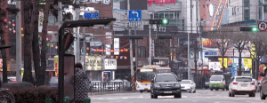
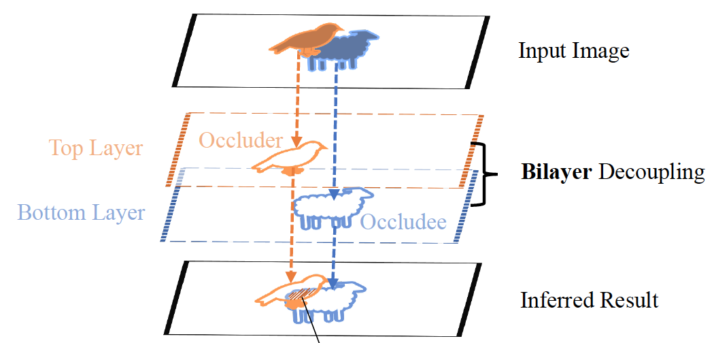
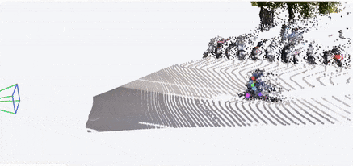

Lei Ke
Senior Researcher at Tencent AI Seattle
I am a Senior Research Scientist in Tencent AI, Seattle Lab. My primary research interest lies in building multimodal foundation systems, especially the visual understanding, reasoning, and generation. Previously, I worked as a Postdoctoral Research Associate at Computer Science of Carnegie Mellon University and in the Computer Vision Lab of ETH Zurich. I obtained my Ph.D. degree from CSE Department at HKUST in mid 2023, supervised by Chi-Keung Tang and Yu-Wing Tai. During the PhD journey, I also spent two years as a visiting scholar at ETH Zurich.I received my B.E. degree from the school of computer science at Wuhan University.
More info: [Email],[Google Scholar],[X],[GitHub], where my opensource projects obtains over 10K+ GitHub stars.
Updates
- 2025.08: We are organizing workshop Generating Digital Twins from Images and Videos at ICCV 2025.
- 2025.08: I will serve as an Area Chair at ICLR 2026.
- 2025.03: I will serve as an Area Chair at NeurIPS 2025.
- 2024.11: Invited guest lecture at Texas A&M University on Vision Foundation Model.
- 2024.04: Joined CMU as a postdoc to work with Prof. Katerina Fragkiadaki, and if you're passionate about vision / robotics with extensive research experience, feel free to reach out for research collaboration!
- 2023.11: We released the Gaussian Grouping project.
- 2023.11: Talks on Scene Understanding with Vision Foundation Models at Stanford SVL and MARVL.
- 2023.06: We released the HQ-SAM and SAM-PT projects.
- 2023.06: Technical committee of VOTS 2023 Challenge. The workshop will take place on October 3rd @ICCV2023.
- 2023.05: Passed the PhD thesis defense and become a Dr.!
- 2023.03: Mask-free VIS is accepted in CVPR 2023.
- 2023.01: BCNet is accepted in TPAMI 2023.
- 2022.07: Video Mask Transfiner on high-quality VIS is accepted by ECCV 2022! We released the HQ-YTVIS dataset.
- 2022.03: PCAN serves as the baseline in BDD100K MOTS challenge at CVPR 2022 Workshop on Autonomous Driving.
- 2022.03: Mask Transfiner on high-quality instance segmentation is accepted by CVPR 2022!
- 2022.03: Invited talk on PCAN at AI Time Seminar, Tsinghua Univ (Virtual).
- 2022.02: Invited talk on Mutltiple Object Tracking & Segmentation in Autonomous Driving at TechBeat.
- 2021.12: Invited spotlight talk for PCAN at SwissTech Convention Center, EPFL.
- 2021.10: PCAN for Multiple Object Tracking and Segmentation is accepted by NeurIPS 2021 as spotlight.
- 2021.07: Our paper on occlusion-aware video inpainting accepted by ICCV 2021.
- 2021.01: I joined CVL at ETHz as a visiting PhD student supervised by Prof.Fisher Yu and Dr.Martin Danelljan.
- 2021.03: Our paper BCNet on occlusion-aware instance segmentation accepted by CVPR 2021!
- 2021.10: Passed the PhD Qualifying Exam.
- 2020.07: Two papers (GSNet and CPMask) accepted by ECCV 2020.
- 2020.02: Our paper on 3D human pose estimation has been accepted by CVPR 2020 for oral presentation.
- 2019.07: Our paper on image captioning accepted by ICCV 2019.
- 2019.05: I will start my Ph.D study at CSE, HKUST this autumn.
- 2019.02: Our paper on video captioning accepted by CVPR 2019.
Selected Publications
Segmentation and Tracking:

|
Segment Anything in High Quality
NeurIPS 2023
Lei Ke*, Mingqiao Ye*, Martin Danelljan, Yifan Liu, Yu-Wing Tai, Chi-Keung Tang, Fisher Yu
(* denotes equal contribution) We propose HQ-SAM to upgrade SAM for high-quality zero-shot segmentation. HQ-SAM is available in Huggingface Transformers |

|
|

|
|
|  | |
|
|
Mask Transfiner for High-Quality Instance Segmentation
CVPR 2022
Lei Ke, Martin Danelljan, Xia Li, Yu-Wing Tai, Chi-Keung Tang, Fisher Yu
An efficient transformer-based method for highly accurate instance segmentation. Transfiner receives 300+ Github stars in 3 months. |

|
Prototypical Cross-Attention Networks for Multiple Object Tracking and Segmentation
NeurIPS 2021
Lei Ke, Xia Li, Martin Danelljan, Yu-Wing Tai, Chi-Keung Tang, Fisher Yu
Efficient cross-attention on space-time memory for video instance segmentation. Spotlight (3% acceptance rate). PCAN receives 200+ Github stars in one month. |
|  |
Deep Occlusion-Aware Instance Segmentation with Overlapping BiLayers
CVPR 2021 & TPAMI 2023
Lei Ke, Yu-Wing Tai, Chi-Keung Tang
Instance segmentation with bilayer decoupling structure for occluder & occludee. BCNet receives 300+ Github stars in 6 months. |
|  |
TAPIP3D: Tracking Any Point in Persistent 3D Geometry
NeurIPS 2025
Bowei Zhang*, Lei Ke*, Adam W. Harley, Katerina Fragkiadaki
(* denotes equal contribution) TAPIP3D: Long-term feed-forward 3D point tracking in persistent 3D point maps. |

|
Video Depth without Video Models
CVPR 2025
Bingxin Ke, Dominik Narnhofer, Shengyu Huang, Lei Ke, Torben Peters, Katerina Fragkiadaki, Anton Obukhov, Konrad Schindler
RollingDepth: A universal monocular depth estimator for arbitrarily long videos. |

|
DreamScene4D: Dynamic Multi-Object Scene Generation from Monocular Videos
NeurIPS 2024
Wen-Hsuan Chu*, Lei Ke*, Katerina Fragkiadaki
DreamScene4D for generating 3D dynamic scenes of multiple objects from monocular videos. |
Experiences
|
|
2024.04—2025.03: Postdoc at MLD, CMU |
|
|
2023.07—2024.03: Postdoc at CVL, ETHz |
|
|
2021.01—2023.03: Visiting PhD student at CVL, ETHz |
|
|
2019.05—2023.05: HKUST Computer Vision Research Assistant |
|
|
2017.11—2019.11: Tencent Youtu X-lab Computer Vision Research Intern, worked closely with Wenjie Pei. |
|
|
2017.05—2017.10: Alibaba Engineering Intern |
|
|
2016.05—2017.02: Undergraduate Research Assistant at Wuhan University |
Awards
Professional Activities
- Area Chair NeurIPS 2025, ICLR 2026.
- Conference Review CVPR 2020/2021/2022/2023, ICCV 2021, ECCV 2022, NeurIPS 2020/2021/2022/2023, ICML 2021/2022/2023, ICLR 2022/2023, ICRA 2022.
- Journal Review TPAMI, IJCV, RA-L.
- Teaching Assistant Computer Graphics (COMP4411), Spring, 2019-2020.
Introduction to Object-oriented Programming (COMP2011), Fall, 2020-2021.
Misc
- Some photography of natural scenery and delicate architecture during my daily life and travelling.